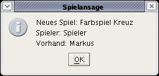
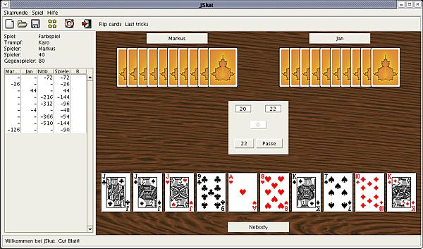
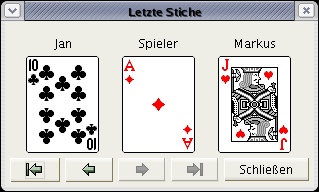
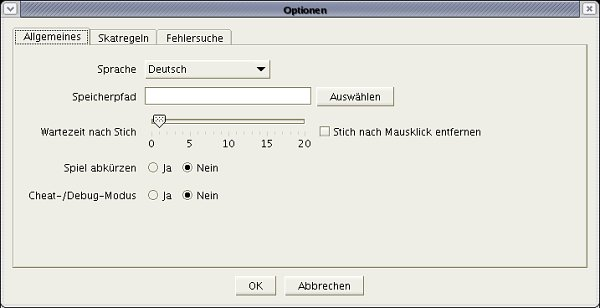

Screenshots

After starting JSkat you'll find yourself sitting at a wooden table.

Let's start a new skat round. Here you have the choice between different AI Skat players. Player 3 can be you or also an AI player.

Now you can do the bidding.

When you did the highest bid you are asked whether you want to look into the Skat or not.

Here you can take one or two cards from the skat into your hand.

After looking into the Skat you have to announce a game. If you didn't look into the Skat you can announce Schneider, Schwarz and Ouvert.
Now the game begins.
While playing all results will be calculated for you and a skat list with all the wins and losses is filled out by JSkat.
You can have a look at the last tricks with this little dialog.
On the options dialog you can set the language, save path and other things, that control the behaviour of JSkat.

JSkat allows you to define the Skat rules in great detail. You can decide whether you want to play only according to the official rules from the ISPA-World or if you want to play with some pub rules like Kontra, Bock and Ramsch.

There is a special debug mode, where you can have a look into the cards of the other players.